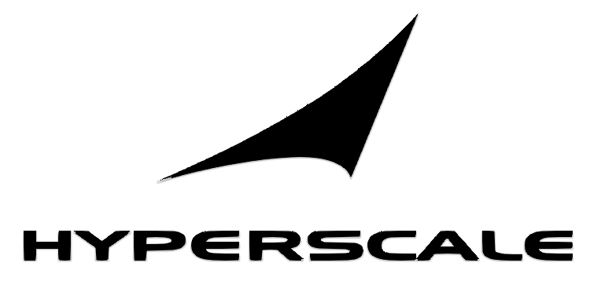

Jeux Olympiques et Paralympiques de Paris 2024 : SCC France à presque 50 ans d'expérience dans l'équipement, le déploiement, et la maintenance des infrastructures technologiques avec de grands groupes privés et le secteur public français.
Nous accompagnons nos clients dans leur transformation digitale, ce qui s'aligne parfaitement avec l'aspect technologique des JO de Paris 2024.
Nous prenons en charge l'approvisionnement, la fourniture, l'installation, la maintenance, et la reprise des équipements informatiques, audiovisuels, reprographiques et mobiles.
La garantie d'une seconde vie aux équipements après l'événement s'inscrit dans une démarche de numérique responsable et d'économie circulaire, des valeurs de plus en plus importantes pour tous. Cette démarche est en adéquation avec l'ambition des JO de Paris 2024 de minimiser leur impact sur l'environnement et de promouvoir un modèle d'événement plus responsable.
SCC France soutiend l'Ukraine : Nous nous engageons dans une initiative humanitaire majeure en réponse à la crise en Ukraine. Depuis avril 2022, nous avons envoyé plus de 100 000 euros de matériel et 23 000 euros de licences Microsoft, en collaboration avec le ministère des Affaires étrangères. De plus, nous avons signé une convention de mécénat de 30 000 euros avec Médecins du Monde pour soutenir leurs actions en Ukraine. Nos équipes ont organisé des convois humanitaires, acheminant plus de 20 tonnes de matériel médical et alimentaire vers des hôpitaux pour enfants. Le prochain convoi est prévu pour septembre.

SCC Hyperscale : Nous lancons SCC Hyperscale, une nouvelle entité dédiée à l'hybridation des infrastructures et des applications. Face à la complexité croissante des systèmes d'information, SCC Hyperscale regroupe les expertises historiques de SCC pour accompagner les entreprises dans la modernisation de leur infrastructure et la gestion de leur dette technique. Avec un plan d'investissement ambitieux, SCC Hyperscale ambitionne de réunir plus de 200 experts d'ici 4 ans, offrant une approche complète, du conseil aux services managés, pour simplifier la complexité des clients.